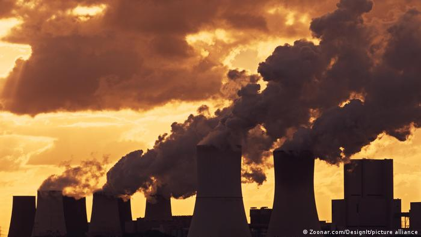
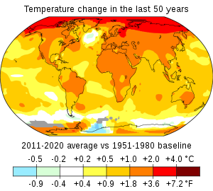

Climate Change is Dangerous
top
Earth's climate has changed throughout history.
Just in the last 650,000 years there have
been seven cycles of glacial advance and retreat,
with the abrupt end of the last ice age about 11,700 years
ago marking the beginning of the modern climate era — and of
human civilization. Most of these climate changes are
attributed to very small variations in Earth’s orbit that
change the amount of solar energy our planet receives.

Scientists have high confidence that global temperatures
will continue to rise for decades to come, largely due
to greenhouse gases produced by human activities. The
Intergovernmental Panel on Climate Change (IPCC), which
includes more than 1,300 scientists from the United
States and other countries,forecasts a temperature rise
of 2.5 to 10 degrees Fahrenheit over the next century.

This infographic shows the temprature change
in the last 50 years across the world map.